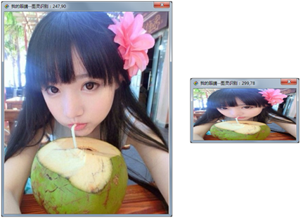

| 命令名称 | Incise_CharSizeOne 切割字符大小归一化 |
| 命令功能 | 对切割的字符像素数据进行统一大小 |
| 语法格式 | TURING.Incise_CharSizeOne(iWidth, iHeight) |
| 参数说明 |
iWidth：整数型，统一大小的宽度值 iHeight：整数型，统一大小的高度值 |
| 返回值 | 无 |
| 按键精灵 |
复制代码
'加载识别字库
Call TURING.Lib_Load("C:\缩放归一字库.lib")
'获取图片图像数据
Call TURING.Pixel_FromPicture("C:\0704.bmp")
'二值化处理
Call TURING.Filter_Binaryzation("128-255")
'固定位置切割字符
数量 = TURING.Incise_FixedLocation(6, 4, 7, 11, 13, 4)
'切割的字符进行大小归一化
Call TURING.Incise_CharSizeOne(40, 40)
'生成识别字库：
'For i = 0 To 数量
' Call TURING.Incise_Preview(i)
' '切割字符生成点阵
' 点阵 = TURING.Lib_OneCharData(i)
' Call TURING.Lib_Save(i, 点阵, "C:\缩放归一字库.lib")
'Next
TracePrint TURING.OCR(50)
|
| 滤镜效果 |  |